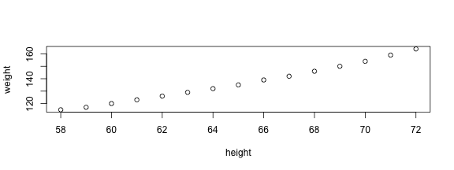

http://goo.gl/52THNf
Wush Wu, Johnson Hsieh, George Chao, Noah Chen


A convenient tool to generate reproducible document.
document 、 slidesmathjax.rmdintegrated shinycode and texthtmlKnit Buttoninstall.packages("rmarkdown")


- 這是DSP推出的第 `ｒ 3+1`門課程
- 鳶尾花資料集(iris dataset)有 `ｒ levels(iris$Species)` 等種類，
總共有 `ｒ length(levels(iris$Species))` 種
$ equation $$$ equation $$熵指標的公式為 $-\sum{p_i \log{p_i}}$ ，表示系統的亂度
熵指標的公式為 \(-\sum{p_i \log{p_i}}\) ，表示系統的亂度
請計算高斯分佈 $$f(x;\mu,\sigma^2) = \frac{1}{\sigma\sqrt{2\pi}}
e^{ -\frac{1}{2}\left(\frac{x-\mu}{\sigma}\right)^2 }$$
請計算高斯分佈 \[f(x;\mu,\sigma^2) = \frac{1}{\sigma\sqrt{2\pi}} e^{ -\frac{1}{2}\left(\frac{x-\mu}{\sigma}\right)^2 }\]
RStudio: "Knit" command:
Command line: rmarkdown::render function
rmarkdown::render("input.Rmd")
在RStudio中，在UI界面中點選help (?)可以查閱Markdown語法

R code will be evaluated and printed
```{r}
summary(cars$dist)
```
summary(cars$dist)
Min. 1st Qu. Median Mean 3rd Qu. Max.
2.00 26.00 36.00 42.98 56.00 120.00
draw graphics
```{r}
plot(women)
```
plot(women)

```{r plot}
summary(cars)
plot(cars)
```
Easy Navigation in RStudio

echo(TRUE): whether to include R source code in the output fileeval(TRUE): whether to evaluate the code chunkmessage(TRUE): whether to preserve messages emitted by message()results('hide','asis'): hide output ; asis treats the output of your R code as literal Markdown (when using like kable function)include(TRUE): whether to be written into the output document, but the code is still evaluated and plot files are generatedwarning(TRUE): whether to preserve warnings in the output comment("##"): set to comment notation Set global chunk options at code chunks header:
knitr::opts_chunk$set(echo=FALSE, results='hide')
利用R Markdown 製作《一周天氣預報》書面報告。範例
利用R Markdown 製作《一周天氣預報》書面報告。
# Hint：
# 1. 下載weather-utf8.csv到自己的電腦上
# 2. 在R chunk中，利用read.csv()讀取檔案進行分析
# Windows: read.csv(,fileEncoding="UTF-8")
# 3. 找出01/28當日最高溫 max()
# 4. 找出01/28當日最低溫 min()
# 5. use inline R chunk `r max(...)`
利用R Markdown 製作《一周天氣預報》書面報告。
# Hint for Linu& Mac：
dat <- read.csv("data/weather-utf8.csv")
max(dat[1:2, 4:5])
min(dat[1:2, 4:5])
# 預測高溫約`r max(dat[1:2,4:5])`度，低溫約`r min(dat[1:2,4:5])`度
# Hint for Windows：
dat <- read.csv("data/weather-utf8.csv", fileEncoding="UTF-8")
max(dat[1:2, 4:5])
min(dat[1:2, 4:5])
# 預測高溫約`r max(dat[1:2,4:5])`度，低溫約`r min(dat[1:2,4:5])`度
print(head(women))
height weight
1 58 115
2 59 117
3 60 120
4 61 123
5 62 126
6 63 129
knitr::kable :results='asis' to write raw results from R into the output document```{r, results='asis'}
knitr::kable(women)
```
| height | weight |
|---|---|
| 58 | 115 |
| 59 | 117 |
| 60 | 120 |
| 61 | 123 |
| 62 | 126 |
| 63 | 129 |
利用R Markdown 製作《一周天氣預報》書面報告。
# Hint：
# 你可能需要dplyr套件
# 可以先用filter把白天、晚上分開處理
# 利用 paste(低溫,高溫,sep="-") 來製作溫度區間, i.e. 16-17
# 利用colnames, rownames來對整理好的資料表的行與列命名
利用R Markdown 製作《一周天氣預報》書面報告。
library(dplyr)
day1 <- filter(dat, 早晚=="白天")
day2 <- mutate(day1, 溫度=paste(高溫,低溫,sep="-"))
day3 <- select(day2, 天氣, 溫度)
night1 <- filter(dat, 早晚=="晚上")
night2 <- mutate(night1, 溫度=paste(高溫,低溫,sep="-"))
night3 <- select(night2, 天氣, 溫度)
out <- data.frame(t(bind_cols(day3, night3)))
colnames(out) <- day1$日期
rownames(out) <- c("白天天氣","白天溫度","晚上天氣","晚上溫度")
利用R Markdown 製作《一周天氣預報》書面報告。
```{r results='asis', echo=FALSE}
knitr::kable(out)
```利用R Markdown 製作《一周天氣預報》書面報告。
# Hint：
# 你可能需要ggplot2套件
# Mac顯示中文需設置字型
# http://equation85.github.io/blog/graph-font-of-r-in-mac-os-x/
# par(family='STHeiti')
利用R Markdown 製作《一周天氣預報》書面報告。
library(ggplot2);library(reshape2)
dat1 <- mutate(dat, 時間=paste(日期,早晚,sep="\n"))
dat2 <- select(dat1, 時間, 高溫, 低溫)
colnames(dat2)[1] <- "時間" # for Windows user
dat3 <- melt(dat2)
g <- ggplot(dat3, aes(x=時間, y=value, group=variable, colour=variable)) +
geom_line() +
labs(x="時間", y="溫度")
# 顯示中文字 Mac user only
g + theme_gray(base_family="STHeiti")
利用R Markdown 製作《一周天氣預報》書面報告。
You can add R Markdown and HTML in the YAML content.
---
title: "Introduction to R Markdown"
author: "Wush Wu, Johnson Hsieh, George Chao, Noah Chen"
date: "2016-01-11"
output: html_document
---
It’s possible to embed a Shiny application within a document.


Using R packages::slidify to publish your slides to the web
library(slidify)
publish_github("repo", username="user_name")
publish_rpubs("title","file_name.html")
publish_dropbox(dir_name)
publish_gist("title",file="file_name.html",publish=TRUE)
Slidify簡介 by Wush Wu
https://www.youtube.com/watch?v=P97udK2ktuY
20121203 MLDM Monday markdown + knitr by Wush Wu
https://www.youtube.com/watch?v=OHKZLeKlUsM